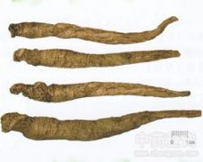

荠苨

拼音
Qí Nǐ
别名
苨、菧苨（《尔雅》），杏参（《本草图经》），杏叶沙参、白面根（《救荒本草》），甜桔梗（《纲目》），土桔梗（《本草原始》），空沙参（《本草从新》），梅参、长叶沙参（《浙江民间常用草药》）。
来源
为桔梗科植物荠苨的根。
生境分布
我国各地山野平原都有分布。
药材特点
多年生草本。茎高约1米，含白色乳汁，无毛或稀有突起样长毛。叶互生；叶片卵圆形至长椭圆状卵形，长5～20厘米，宽3～8厘米，叶端尖，边缘有锐锯齿，基部近截形至心形，有柄；上部叶小形，无柄。圆锥状总状花序；花枝颇长，花梗短；小苞细小；花下垂；萼5裂，裂片绿色，披针形，锐尖头，长5～8毫米；花冠上方扩张成钟形，淡青紫色，长2～3厘米；先端5裂，裂片尖，下垂；雄蕊5，花丝下半部呈披针形，上方渐次狭细；雌蕊1，花柱比花冠稍短，上部膨大，柱头3浅裂，子房下位。蒴果圆形；含有多数种子。花期8～9月。果期10月。
性状
无性状数据
性味
甘，寒。 ①《别录》:"甘，寒。" ②《千金翼·本草》:"无毒。" ③《本草从新》:"甘淡，微寒。"
功能主治
清热，解毒，化痰。治燥咳，喉痛，消渴，疔疮肿毒。 ①《别录》:"解百药毒。" ②《食医心镜》:"利肺气，和中，明目，止痛。" ③《日华子本草》:"治蛇虫咬，热狂温疾，署毒箭。" ④《纲目》:"主咳嗽，消渴强中，疮毒疔肿。" ⑤《饮片新参》:"治虚损肺热燥咳，生津液，养胃退蒸。" ⑥《科学的民间药草》:"适合于咽喉炎，急性气管炎等，粘滑祛痰。" ⑦《浙江中药手册》:"清肺火，化燥痰。治肺热咳嗽，疗心胸结热。"
用法用量
内服:煎汤，1～3钱；研末或作丸。外用:研末调敷或捣敷。
化学成分
含β-谷甾醇和胡萝卜甾醇等。
药理作用
1：无药理作用数据
摘录
《中药大辞典》